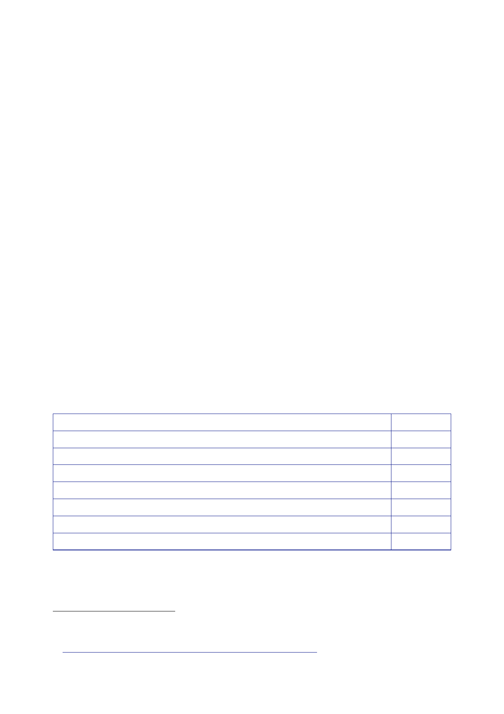

9.7 | May
2008 to October 2009
372.
In relation to
relationships with the US, Lt Gen Cooper commented:
“2008 was a
difficult year in Iraq for the UK-US relationship, but it has
recovered to
a degree
since then. A degree of certainty in our position in MND(SE) has
helped.
Whilst it
is true that many US officers would have wished us to stay with
them until
the end of
their mission here, the fact that we now have a defined end date to
which
both
parties are working has allowed harmony in planning to be
maintained.”
373.
Mr Prentice
reported on 5 March that President Obama’s announcement
had
received
“blanket media coverage” in Iraq.150
Given his
campaign pledge to withdraw
troops
within 16 months of taking office, the announcement had come as
little surprise.
But the
Iraqi Government had welcomed the statement and, although some
were
nervous
about the implications, public opinion in Iraq appeared to be
mostly positive.
374.
Mr Prentice
commented that the “phantom elephant in the room” was the
promised
referendum
on the US Security Agreement, described in the law that ratified
the US
SOFA. The
US and the MNF were working on the basis that there would not be
a
referendum.
375.
On 9 March, a
CIG considered the implications of Iraq’s provincial elections,
at
the request
of the FCO.151
The CIG
noted that the average turnout was 51 percent and
that the
formerly dominant parties all performed poorly. Overall, Prime
Minister Maliki’s
“Rule of
Law” coalition and secular Sunni parties were the winners at the
expense of the
Kurds and
Islamist parties. Sadrists won “a handful of seats” on all southern
councils
and in
Baghdad.
Rule of
Law
ISCI
Sadrists
Allawi’s
coalition
Ja’afari’s
coalition
Hadba
Total
seats
Party
Seats
126
55
41
26
23
19
440
376.
The CIG
assessed that improved security at the elections (11 reported
attacks,
compared
with some 300 in 2005) indicated both improvement in ISF capability
and
150
eGram
8095/09 Baghdad to FCO London, 5 March 2009, ‘Iraq: Reactions to
Obama’s Announcement
on Military
Drawdown’.
151
CIG
Assessment, 9 March 2009, ‘Iraq After the Provincial
Elections’.
445